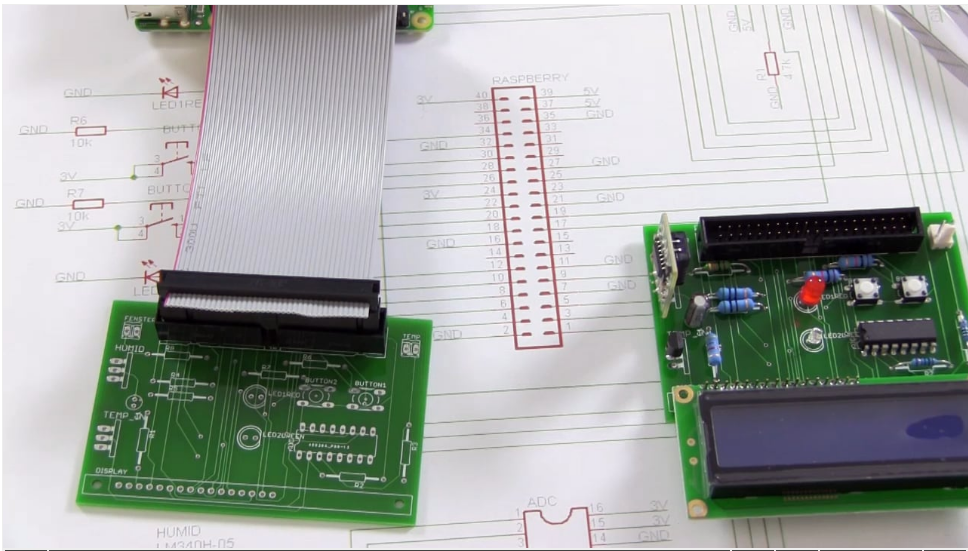

A java port for the OpenHPI 2016 embedded Smarthome course.
The course took place from Monday, 06. June 2016, 08:00 (UTC) until Sunday, 10. Juli 2016, 12:00 (UTC) as an openHPI MOOC.
You can recap the course in self-study at
https://open.hpi.de/courses/smarthome2016.
The programming examples in the course are all based on python. This project shows how to access the hardware using Java.
You need the Board used during the course connected to an Raspberry PI, like shown in the course videos.
Easiest way to get all running is to check out the sources, build and run directly on the Raspberry PI.
Java 8 is needed to build all sources.

Download circuit diagram
Buy the board